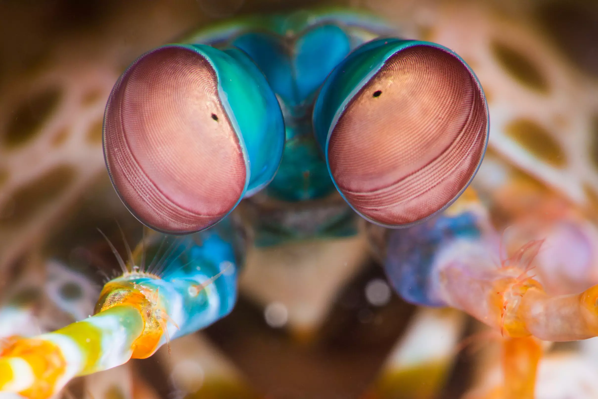
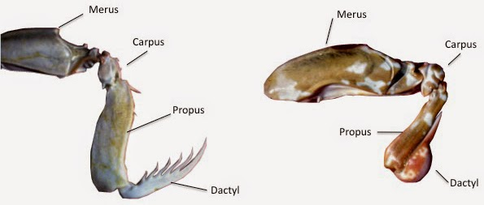
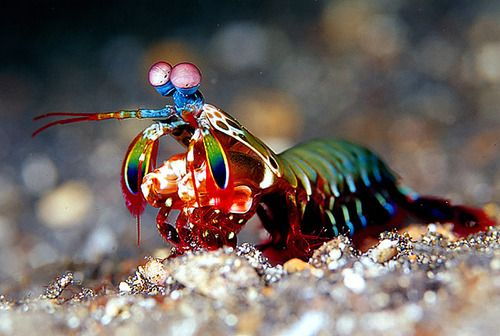
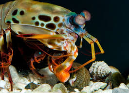

Fatos sobre o Stomatopoda.
Odontodactylus scyllarus
| Reino | Filo | Subfilo | Classe | Subclasse | Ordem |
|---|---|---|---|---|---|
| Animalia | Arthropoda | Crustacea | Malacostraca | Hoplocarida | Stomatopoda |
Super visão:
Possui 16 receptores de cores em seus olhos, diferente dos humanos com apenas 3, possibilitando que o animal enxergue muito mais cores.
Super velocidade:
Seus apêndices raptoriais conseguem acelerar a uma velocidade de 80km/h, a mesma velocidade de um tiro de uma arma calibre .22.
Alta violência:
Ele usa esses membros e essa velocidade para desmembrar as presas, as partindo em pedaços antes de comer.
Ondas de choque:
A velocidade dos golpes é tão forte que a água em volta ferve, e a presa pode morrer pelas ondas de choque mesmo que o Stomapoda os erre.
